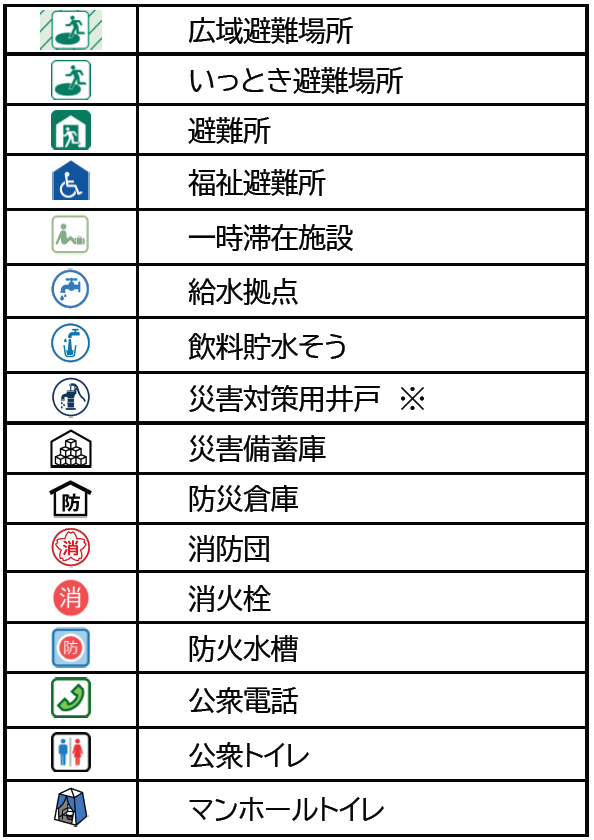

※災害対策用井戸
災害時に限り、井戸所有者のご協力により生活用水としての井戸水を近隣の方々へ提供していただけるもの。
詳しくは小平市のホームページをご確認ください。
©OpenStreetMap contributors (ODbL) ; MapLibre ; 地図作製：高橋克典(こだいらSVCS)
参考・出典：小平市防災マップ ; 東京消防庁オープンデータ ; 国土交通省位置参照情報ダウンロードサービス
NPO法人小平井戸の会様の情報も参考にさせていただきました
本マップは2026年9月時点の情報をもとに高橋克典(こだいらSVCs)が自主作成したものです。避難所や設備の最新情報・正確な運用状況については小平市・東京消防庁・国土交通省等各種公式情報をご確認ください。